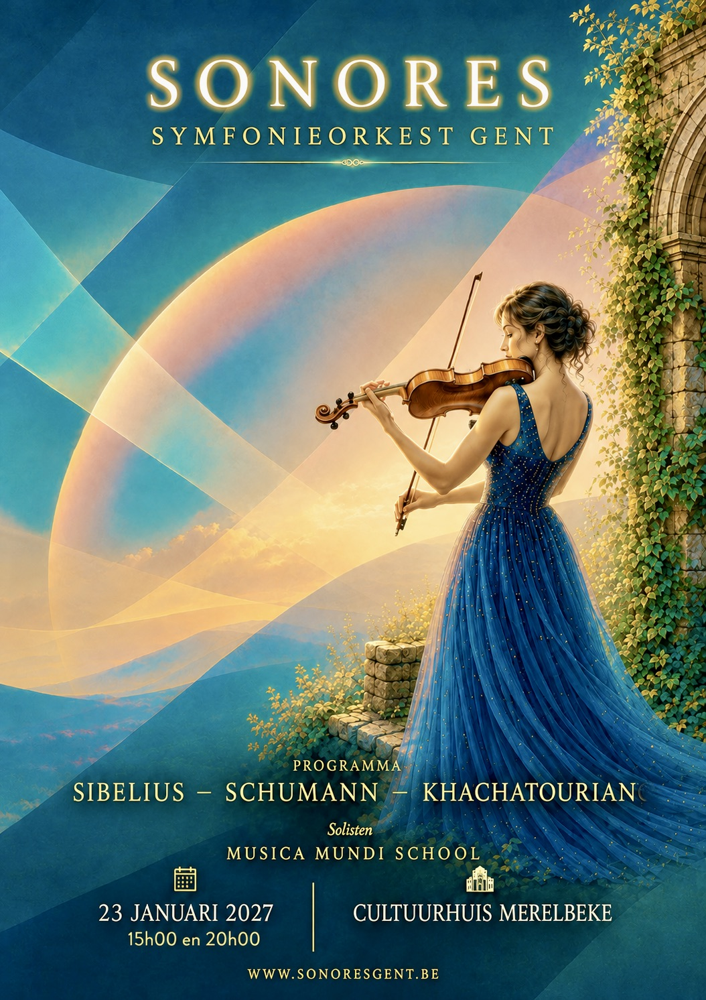
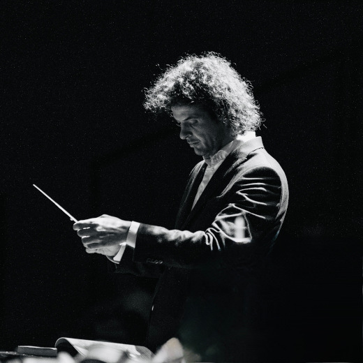
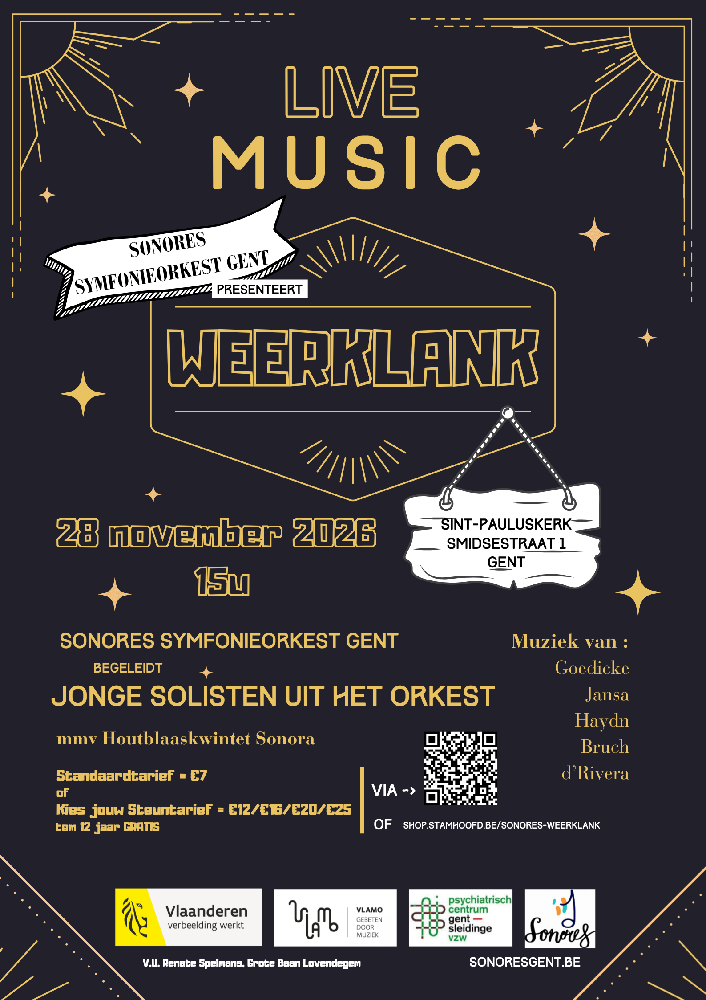
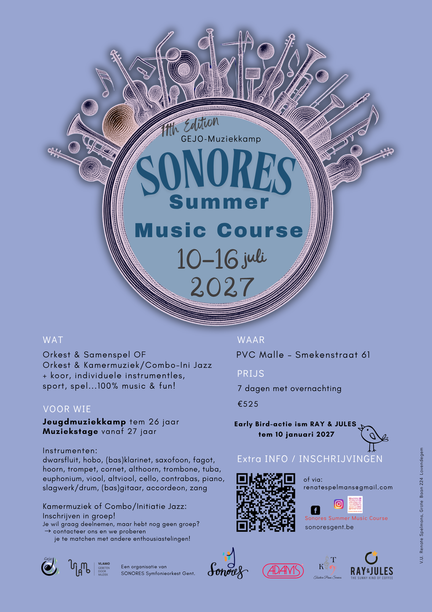

Sonores stelt voor

All' overtura uit 'Scènes Historiques' op. 25, Jean Sibelius
Vioolconcert in D klein op. 46, Aram Khachaturian met solisten van Musica Mundi School
Symfonie nr. 1 in Bb groot op. 38, Robert Schumann
za 23 januari 2027, 20h
Cultuurhuis Merelbeke, Driekoningenplein 15, 9820 Merelbeke
Een orkest vol gepassioneerde muzikanten, bestaande uit een mix van gemotiveerde amateurs, leerlingen van de academie en professionals, met de ambitie om de grotere symfonische werken te brengen.
Van Mozart tot Mahler, van Bruckner tot Brahms. Allemaal fantastische componisten met werken die ondanks hun leeftijd blijven aanspreken. Ook als amateur kan je hiervan meeproeven door mee te spelen met Sonores.

Joeri Van hove
DirigentJoeri Van hove studeerde trompet aan het koninklijk conservatorium van Gent bij Benny Wiame en Steven Devolder. Symfonische directie bij Eddy Van Oosthuyse, Dirk Brossé (in Gent) en Edmont Saveniers ( Lemmensinstituut Leuven).
Joeri speelde als trompettist met oa Limburgs Symfonie Orkest, Orkest der Lage Landen, Kamerorkest voor Vlaanderen, European Festival Orchestra, Prima La Musica en de Beethovenacademie. Hij trad op als solist met verschillende Belgische ensembles oa op het verjaardagsfeest van Koning Albert II en met het nationaal orkest van Litouwen.
Momenteel is Joeri verbonden als leraar trompet en samenspel aan de muziekacademie van Gent en dirigeert hij Sonores symfonieorkest Gent, Brassband Zeeland en het Koninklijk Koor en Orkest Zanglust Tielt.
Volg je les groepsmusiceren in Sonores als alternatieve leercontext (ALC)
Elke zaterdagochtend wordt er gerepeteerd van 9h30 tem 12h30 in het Psychiatrisch Centrum Gent-Sleidinge, Campus Gent, Fratersplein 9 te Gent. Gratis parking ter beschikking.
iCal-URL (bv. Apple iOS): https://www.google.com/calendar/ical/sonoresgent.be_tgjj57c3lc6pjndmogkttbhrp0@group.calendar.google.com/public/basic.ics
Volg instructies op Google : De agenda van een kennis toevoegen. en synchroniseer deze agenda op je smartphone.
Muzikanten gezocht!
Betreed met de vzw Sonores Symfonieorkest Gent o.l.v. Joeri Van Hove (ism. de Academie voor Muziek, Woord en Dans Gent/Drongen/Evergem) op zaterdagochtend de wereld van de wonderbare klassieke muziek tijdens onze wekelijkse repetities te Gent
Vooral strijkers worden hard gezocht !
Jeugdwerking
Sonores Summer Music Course
Jeugdmuziekkamp tem 26 jaar
Jonge Solistenconcert
"Weerklank" 28/11/2026
Jonge Solistenconcert "Weerklank"

zaterdag 28/11/2026, 15u
Sint-Pauluskerk, Smidsestraat 1, Gent
Sonores Symfonieorkest Gent begeleidt jonge solisten uit eigen gelederen!
Programma
“Concert Etude” - Goedicke (arr. voor orkest Joeri)
Solist: Tomas Xavier (trompet 16 jr)
“Concertino” - Jansa (1e deel)
Solist: Pia Spelmans (viool 11 jr)
“Celloconcerto nr. 1 in C” - Haydn (1e deel)
Solist: Leandro Oliva Devoghel (cello 13 jr)
“Vioolconcerto nr. 1” - Bruch (1e deel)
Solist: Selena Oliva Devoghel (17 jr)
met medewerking van Houtblaaskwintet Sonora dat enkele delen speelt uit “Aires Pastorales” van d’Rivera
Kaarten kunnen online besteld worden via de QR-code op de affiche of via deze link!
Sonores Summer Music Course 2027

10 - 16 juli 2027
Een unieke ORKESTervaring, gecombineerd met individuele instrumentlessen, samenspel/kamermuziek, combo/initiatie Jazz, koor, sport&spel...!
Kortom een feest en een zalig, lang muzikaal bad van 7 dagen!!!
Concept
Jeugdmuziekkamp tem 26 jaar.
Muziekstage voor volwassenen vanaf 27 jaar.
Ofwel kies je voor "Orkest & Samenspel" - "The Original - Core"
(dagelijks 30' individuele instrumentles, samenspel, sport&spel)
ofwel kies je voor "Orkest & Kamermuziek/Combo-Initiatie Jazz" - "The Original - Focus"
(dagelijks 30' individuele instrumentles, 1u intensieve coaching kamermuziek/combo, sport&spel)
en alle daarbij horende onvergetelijke momenten!
Iedereen heeft sowieso koor en orkest:
Strijk- en blaasorkest voor beginnende muzikanten en halfgevorderden.
Hybride-orkest voor gevorderde muzikanten.
Wanneer je kiest voor "Orkest & Kamermuziek/Combo-Initiatie Jazz", kan je inschrijven met een bestaande groep (pianoduo, blazerstrio, strijkkwartet, jazzcombo...)!
Jij zorgt voor de groep, wij voor een passende leerkracht!
Heb je geen groep en wil je toch graag deelnemen?
Contacteer ons en wij proberen je te matchen met andere enthousiaste muzikanten!
Initiatie Jazz / Combo = half-gevorderde en gevorderde muzikanten
Kamermuziek = gevorderde muzikanten
Instrumenten
Alle hout- en koperblazers, alle strijkinstrumenten, (bas)gitaar, slagwerk/drum, piano, accordeon, zang!
Iedereen is welkom, maar een basis notenlezen is wel vereist!
Locatie
Provinciaal Vormingscentrum Malle, Smekenstraat 61
We verblijven hier in volpension.
7 dagen (6 nachten) = €525
Inschrijven
Via de QR-code op de affiche of HIER!
Earlybird-actie
Tem 10 januari 2026 kan je via onze Earlybird-actie, ism Ray&Jules, koffie verkopen.
Hierbij gaat er per verkocht pakket €3 af van het inschrijvingsgeld
+ per 15 pakketten komt er nog eens €5 extra korting bovenop en verzamel je dus maar liefst €50 vermindering!
Wave 1: verkoop tem 12/11 met levering in de week van 23/11
Wave 2: verkoop tem 10/1 met levering in de week van 18/1
Sponsors gezocht!
Promoot uw merk of product in het programmaboekje, op onze website, op onze sociale media.
Organiseer privé-concerten. Sonores verzorgde reeds de Nieuwjaarsconcerten van de Gemeente Evergem in 2022 en 2024 .
Gebruik onze concerten om uw leden of klanten een unieke belevenis te geven.
Contacteer ons vrijblijvend op info[at]sonoresgent.be